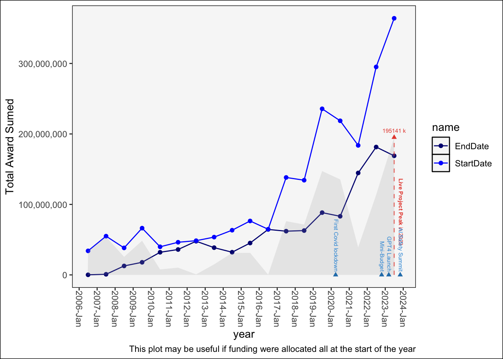

gtr |>plot_freq(sum(AwardPounds,na.rm=T)) +ylab("Total Award Sumed") +labs(caption="This plot may be useful if funding were allocated all at the start of the year")

Explore Elite (Most Expensive) Projects
Code
require(htmlwidgets)
Loading required package: htmlwidgets
Code
## parameterSNOBYNESS=0.02## this is top n most expensivePRICE_FORMULAR=quo( AwardPounds/as.numeric(duration, units='days') ## this is how you calculate expensiveness) ## calculate award per year price_gtr = gtr |>mutate(duration = EndDate - StartDate) |>mutate(duration_d =as.numeric(duration, units='days')) |>mutate(price =!! PRICE_FORMULAR) |>arrange(desc(price)) |>mutate(expensive_rank =row_number()) |>filter(expensive_rank <=quantile(expensive_rank, SNOBYNESS))g <- price_gtr |>ggplot(aes(y = price, label = LeadROName, label1= Title, label2 = ProjectReference)) +geom_linerange(aes(xmin = StartDate, xmax = EndDate, y = price, alpha = duration_d), color ="darkgrey") +geom_point(aes(x = StartDate), color ="blue") +geom_point(aes(x = EndDate), color ="navy") +ggtitle(glue::glue("Here are the top {SNOBYNESS * 100}% most expensive AI projects")) +scale_alpha_continuous(trans='log')ggplotly(g) |>style(traces =2, text =paste(price_gtr$StartDate,"\n",price_gtr$duration, "days")) |>style(traces =1, text =paste( price_gtr$PIFirstName, price_gtr$PISurname,"\n",price_gtr$duration, "days")) |>style(traces =3, customdata = price_gtr$GTRProjectUrl, text =paste(price_gtr$EndDate,"\n", price_gtr$LeadROName, "\n",price_gtr$Title)) |>onRender(" function(el) { el.on('plotly_click', function(d) { var url = d.points[0].customdata; window.open(url); }); } ") #set up click event that open URL